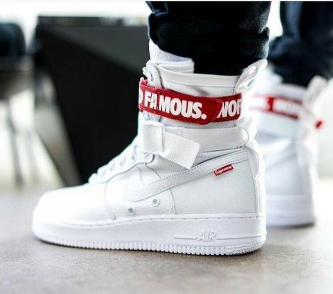
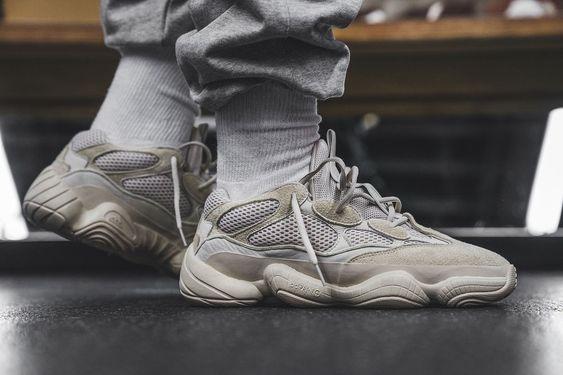
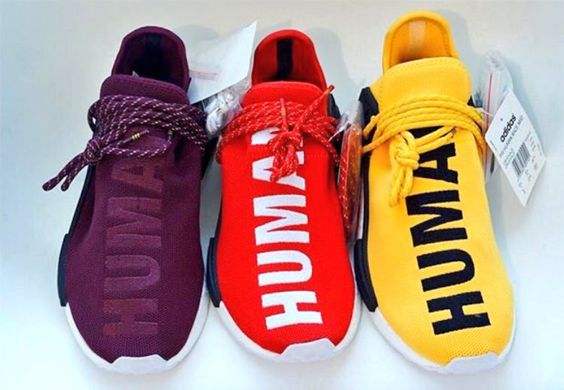
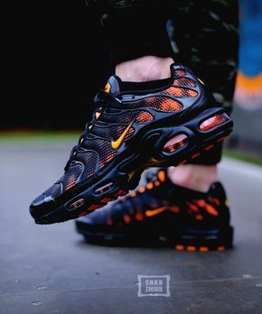
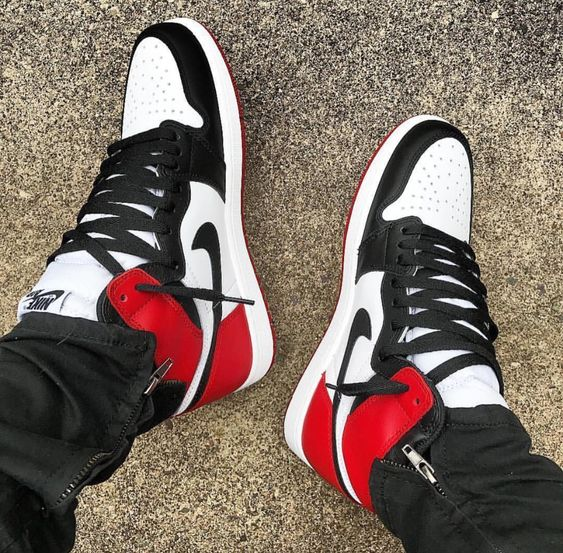

Randy The Cobbler updated the all-white Nike Special Field Aiir Force 1with a Supreme lace badge, a custom ankle strap and Swoosh tag.
Yeezy Desert Rat 500s would be available in Adidas stores from March 2018, the upcoming realease would not feature BOOST cushioning, instead packing adiPRENE technology.
The ground breaking partnership is back again with four brand new conformed adidas NMD HU Trail models that utilized bold, typographic elements on the upper of each shoe.
The Nike Lebron 15 Low looks very similar to the original high/mid as the entire upper is constructed out the Nike's new BattleKnit material.

The Unique addition to the Air Max dynasty defined the era in which it debuted as well as those followed.
In 1985, the Air Jordan 1 was the first multi-colored sneaker on the NBA court. It was banned by the NBA commissioner for breaking league rules—but His Airness wore it anyway. Keep the legacy alive with a pair of iconic Air Jordan 1 shoes.
